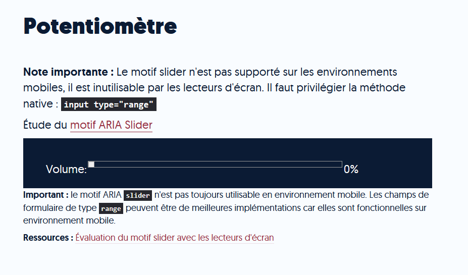

Main
ARIA role="main" unique
OBLIGATOIRE ! Un seul main par page !! id="main et tabindex="-1"Les Titres et la Hierarchie des headings
Accueil:___ "< h1>Accueil: < /h1>"
Actualités :___ "< h2> Actualités < /h2>"
Où en est-on ? :____" < h2 role="heading" aria-level="3">Où en est-on ? < /h2> "
Ils arrivent bientôt !____ : "< h2 role="heading" aria-level="3">Ils arrivent bientôt !< /h2>"
Listes
- Liste non ordonnée : ul li
- Liste ordonnée : ol li
- Liste de définition : dl dt/dd
- role="list" role="listitem"
- ⚠ Les suites de liens devraient être structurées avec des listes.
- Favoriser l’information…
- Permettre aux personnes…
- Favoriser l’information…
- Permettre aux personnes…
- Terme à définir…
- Définition…
- ...
- ...
Citations
- Citation en ligne < q > < /q >
- Citation en bloc < blockquote > < / blockquote >
Citation
Carpe diem
Blockquote
Tant qu’à jouer à marcher, éteignez votre ordi et allez marcher dehors
Cadres iframe et frame
- Assurer l’identification des balises iframe et frame avec un titre pertinent
- Pas de titre dans le cas de cadres techniques (Google Analytics, etc.) mais cacher avec aria-hidden="true"
Exemple:
< iframe title="Publicité" > Video d'une pub dans ce frame < /iframe >
Changement de langue
Attribut lang sur l’élément ou un parent.
Cas typique : newsletter
Avec les éditeurs de texte riche, permettre aux contributeurs d'intégrer des changements de langue : CKEditor
Exemple:
< p >Des contenus vidéos sur le Web (< span lang="en" > on < /span > et < span lang="en" > offline < /span >). < /p >Des contenus vidéos sur le Web (on et offline).
Changement de sens de lecture
- attribut dir sur l’élément lui-même ou un parent ;
- Deux valeurs : ltr ou rtl
- ltr implicite, peut être omise sur l’élément html
< span lang="ar" dir="rtl" > شكرا جزيلا < /span >
Tableaux de mise en forme
Compréhensible si linéarisé
- role="presentation" sur la balise table
- HTML 4 : summary="" si présent
-
Pas de balises < th > < thead > < tfoot > < caption >
ou d’attributs de tableaux de données : scope / headers / colgroup / axis / role="columnheader" / role="rowheader"
Tableau role présentation:

|
Retrouvez nos vidéos d’informations !… |
En supprimant la sémantique du tableau avec le role="presentation", les textes contenus dans le tableau,
s'ils n’ont pas de sémantiques, contreviennent alors au critère 8.9 (détournement de balisage).
Penser à redonner de la structure aux textes (titres, paragraphes, listes ...) dans ces cas
Tableaux simples
- Un titre "< caption >"
- Déclaration des entêtes < th scope="[col|row]" >

Equivalent ARIA :

- Tableau : role="table"
- Titre : aria-label="Nom du tableau" ou aria-labelledby="@id_titre"
- Entêtes : role="rowheader" / role="columnheader"
- Cellules : role="cell"
Tableaux complexes
- Complexe si une cellule est titrée par plus d’une ligne ou colonne d’en-tête
- "< caption >" : le titre + un résumé de l’organisation du tableau
- summary pour le résumé pour les versions précédentes de HTML
Exemple:

Figure 2 - Répartition des déchets non dangereux non minéraux hors boues de l’industrie manufacturière par type en 2016
Les industries agroalimentaires (IAA) et les industries manufacturières (hors IAA) sont présentées sur 2 colonnes, avec, pour chacune d’elles la quantité en milliers de tonnes le pourcentage. Une troisième colonne présente le total des deux industries, en milliers de tonnes et en pourcentage.
Tableaux complexes
Identifier les cellules d’en-têtes via un attribut id et lier les cellules de données
via l’attribut headers.
Exemple : headers="id_1 id_2"


En gros: les données
le lecteur d'écran vocalise de façon logique à quoi correspondent les données.
En l'absence de ces id le lecteur vocaliserait en ligne ce qui n'aurait aucun sens par rapport aux rapport entre les données
Exemple:
Le lecteur lirait: Déchets banals 1147 - 31 - 9795 - 97 - 10942 - 79
Images de décoration
Pour les éléments < img >, empêcher la restitution au moyen de :
- alt vide
- ou aria-hidden="true"
- ou role="presentation"
Pour les éléments < svg >, empêcher la restitution au moyen de :
- aria-hidden="true"
De plus
- Aucun des attributs suivants ne doit être présent : aria-label / aria-describedby / aria-labelledby / role="img" / title
- Les balises < title> et < desc> doivent être vides ou absentes

Images porteuses d'information
Pour les éléments < img >, définir une alternative au moyen de:
- aria-labelledby
- ou aria-label
- ou alt
- title


Nom accessible
- Nom - donné à un element d'interface utilisateur - et exploité par les TA.
- Déterminé par une propriété visible (par ex un texte) OU invisible ( par ex attribut "alt")
- Alternative d'image / intitulé de lien ou bouton / étiquette de champ de formulaire = Nom accessible
- Voir l'algo de calcul du nom accessible
- Restitution sur la base de référence

Car le "aria-label" prime sur le "alt" quand il y a les 2


Pour les elements < svg >, définir une alternative au moyen de :
- role="img"
- ET aria-label OU aria-labelledby

Image map
Image cliquable côté client- 1 alternative générique sur l'image elle-même
- 1 alternative pertinente pour chaque zone sensible

Pour les alternatives :
- L'alternative générique de l'image est alt "Carte de France"
- L'alternative pertintentes pour chaque zone sensible sont "Alsace","Bretagne" etc
L'élément HTML < map > est utilisé avec des éléments < area > afin de
définir une image cliquable divisée en régions.
< img > a l'attribut usemap avec le # de l'ancre qui renvoie à la balise < map > avec l'id présente dans < img >
L'attribut name fournit un nom afin que la carte cliquable puisse être référencée.
Cet attribut est obligatoire et sa valeur doit être une chaîne de caractères non-vide qui ne contient pas de blancs.
La valeur de cet attribut name doit être unique pour tous les éléments < map > du document.
Si l'attribut universel id est utilisé, name devra avoir la même valeur que celui-ci.
Image description détaillée
- Description détaillée adjacente
- OU lien adjacent
Egalement possible d'utiliser les attributs aria-label ou aria-labelledby.
Note: aria-label et aria-labelledby ne sont exploités que par les lecteurs d'écrans.

Image captcha
L’alternative de l’image doit permettre d’ identifier la nature de l’image

Alternative non graphique
- CAPTCHA sonore ou logique
- envoi du code par email/SMS

Texte en image
- Texte en image remplacé par du texte stylé (CSS)
- OU mecanisme de remplacement


Images légendées
Légende : texte adjacent à une image
- qui contient des informations sur l'image (copyright, date, auteur...)
- OU destiné à compléter les infos apportées par l'image (texte associé à une image dans une galerie d'images)
Il faut associer la légende à l'image par une relation de structure pour que les TA traitent l'image et sa légende comme un ensemble unique

Les liens
Minute techniques concernant les liens

Liens explicites
Intitulé défini par :
- aria-labelledby
- aria-label
- Contenu entre < a > et < /a > : texte ou contenu du alt pour les liens-images
ou combinaison des deux pour les liens composites - title
- Contextes : titre précédent, paragraphe, phrase...(Attention : les contextes sont non cumulatifs)
- Attribut title doit au moins reprendre l'intitulé

Le nom visible doit être contenu dans le nom accessible
Ressource: Bookmarklet pour visualiser la liste des liens et leur nom accessible

Exemple QUIZZ


Lien identiques
- Liens identiques = intitulé + contexte
- Même destination
Exemple NON CONFORME:

Lien vides
- Pas de lien vides !
- Attention aux alt="" sur les images liens
- Attention aux liens mis en forme via CSS uniquement (par exemple avec content)
Exemple NON CONFORME lien mis en forme avec css dans html:

4. AVERTIR ET LAISSER LE CONTROLE A L'UTILISATEUR
Limite de temps de session
- L'utilisateurice doit pouvoir supprimer ou augmenter la limite de temps
- La limite de temps est de 20h au moins
- Cas particulier lorque la limite de temps est essentielle
Rafraîchissement
- L'utilisateurice peut arrêter et relancer le rafraîchissement
- L'utilisateurice est alerté de l'imminence d'un rafraîchissement et peut augmenter le délai de 10 fois au moins

Nouvelles fenêtres
- Pas de nouvelles fenêtres sans action de l'utilisateurice
Documents en téléchargement
- Document accessible
- OU alternative accessible: en HTML / .doc / .odt structurés
Exemption: Les fichiers publiés avant le 23 septembre 2018, sauf s’ils sont nécessaires à l’accomplissement d’une démarche administrative relevant des tâches effectuées par l’organisme concerné.
Ressources: Outils:
Clignotement et contenus en mouvement
L'utilisateurice doit pouvoir
- Arrêter et relancer (ex : bouton pause sur un carrousel)
- Masquer et réafficher
- Afficher le contenu sans le mouvement
- Le mouvement dure 5 secondes ou moins
- Contrôle individuel

Effet de flash
- Fréquence limite : égale ou inf à 3 flashs / seconde
- OU surface cumulée : égale ou inf à 21824 pixels
Son déclenché automatiquement
- Les sons déclenchés automatiquement doivent être contrôlables
- De préférence le contrôle doit être le premier élément de la page

Indépendance de l'orientation
- Le contenu doit être consultable quel que soit l'orientation du périphérique: portrait ou paysage
- SAUF si l'orientation est essentielle

Gestes complexes
Les fonctionnalités utilisables par des gestes multipoints (zoom sur une carte) OU basés sur un tracé (swipe) :
- Peuvent être réalisés avec un geste à point unique et / ou sans trajectoire
- SAUF si le geste est essentiel (ex le dessin d'une signature)

Annulation du pointeur
- Aucun événement de doit être déclenché sur l'action descendante (down: mousedown sur desktop / touchstart sur mobile)
- OU un mécanisme permet d'interrompre l'exécution de l'action avant la fin
- OU un mécanisme permet d'annuler l'action
Activation par le mouvement
Les fonctions qui sont déclenchées en déplançant l'appareil (en secouant ou basculant) ou lorsque l'utilisateurice effectue un mouvement capté par des dispositifs de l'appareil (ex: une caméra) peuvent être:
- actionnés par des composants classiques (un bouton)
- désactivés pour éviter un déclenchement accidentel
- SAUF si le mouvement est essentiel pour la fonction

5.COULEURS
Contrastes
Evaluation pour : les textes / les textes en images / les textes incrustés (vidéo etc...)
- Ratio de 4,5 minimum :
- police inf à 24 px sans graisse
- police inf à 18,5 px gras
- Ratio de 3 minimum :
- police sup ou = à 24 px sans graisse
- police sup ou = à 18,5 px gras
- Mécanisme de remplacement

Contrastes des éléments graphiques
Evaluation pour tous les éléments graphiques porteurs d'information (images / bouton / icônes / etc) SAUF cas particuliers
- Contraste minimum de 3:1
- Présence d'un mecanisme de remplacement
Exemples de cas particuliers:
Composant inactif / composant natif du navigateur / élément avec une alternative / logo
Ressources:Comprendre le critère : quelques exemples
Exemples de contrastes valides et invalides sur les différents états (hover et focus) de composants d'interface

Visibilité de la prise de focus
- Pas de dégradation de l'outline natif ( outline:0 )
- OU utilisation d'une indication de focus augmentée suffisamment contrastée ( ratio min de 3)
Les états :focus / :hover des composants doivent également être suffisamment contrastés

Attention aux composants interactifs masqués (case à cocher / bouton radio etc) : penser à répercuter la visibilité de la prise de focus sur l'élément


Visibilité des liens en environnement de texte
- Contraste suffisant ( sup à 3 par rapport au texte environnant)
- Indicateur supplémentaire à la couleur (forme) au survol souris et à la prise de focus
Couleurs par défaut
- Si une couleur de police est définie : couleur de fond au moins héritée d'un parent
- Si une couleur de fond est définie : couleur de police au moins héritée d'un parent

- Cas des images de fond utilisées pour créer une couleur de fond : s'assurer de la présence d'une propriété "background-color" sur le conteneur


Information par la couleur
Cas les plus courants- Indication de page active
- Indication d'onglets affichés
- Carrousel: indication de contenu actif


5. PRESENTATION - CSS
Information par la forme, la taille ou la position
- Alternative textuelle par ex via un attribut title
- OU une version alternative
Utilisation exclusive de CSS
- Utilisation exclusive de CSS :
-
- link rel = "stylesheet" >
- style > style / >
- OU attribut style en ligne
- Pas d'attribut de mise en forme < table border ="0" >
- Pas d'attribut de mise en forme < font >

Ressources : Liste complète des attributs et balises interdites
Accessibilité d’Angular Material : l’attribut color et le RGAA
Contenus visibles sans CSS
Le contenu visible reste présent lorsque les feuilles de styles sont désactivés
Attention :- Contenu inséré par CSS content (texte, icônes porteuses d'information)
- Images de fond porteuses d'informations ( background-image)

Contenus compréhensible sans CSS
Le contenu reste compréhensible lorsque les feuilles de styles sont désactivées.
- Ordre des éléments logique
- Ordre des éléments cohérent, l'enchainement de la lecture est cohérente

Contenus cachés
Pour les composants qui ont les propriétés CSS
- display:none
- visibility:hidden
- font-size:0
Ou les composants avec la propriété ARIA aria-hidden:"true" ou hidden (dans ces cas, vérifier la cohérence entre la visibilité des contenus et la valeur de la propriété)
S'assurer que le contenu masqué n'a pas vocation à être réstitué par les technologies d'assistance.
Zoom texte
Unités des tailles de police- Utiliser des tailles de police relatives : em / rem / %
- Depuis RGAA 4 : tailles de police en px authorisées
NOTE IMPORTANTE : Les tailles de police en px ne premettent pas d'agrandir les textes sur certains navigateurs.

Le texte doit rester lisible lorsque la taille des caractères est augmentée à 200%
- Zoom texte : Firefox : "Affichage > Zoom texte seul" - agrandissement à 200% (ctrl + 6 fois)
- OU utilisation des fonctions de zoom du navigateur ( zoom graphique)
- OU utilisation d'un dispositif d'agrandissement des caractères (A+ / A-)
NOTE IMPORTANTE : Les fonctionnalités de zoom du navigateur ou du mécanisme d'agrandissement sont inutiles si l'utilisateurice a modifié la taille par défaut dans les paramètres de son navigateur
Exemple Gestion zoom non conforme :
Linéarisation des contenus
Les contenus doivent rester présent, lisibles et utilisables sans utilisation des 2 ascenseurs :
- Pour les contenus dont le sens de consultation est VERTICAL : LARGEUR de fenêtre réduite à 320px
- Pour les contenus dont le sens de consultation est HORIZONTAL : HAUTEUR de fenêtre réduite à 256px
Pour tester dans Firefox : Ctrl + Alt + M
Adaptation des textes
Les textes doivent rester lisibles dans les conditions suivantes :
- interlignage augmenté de 1,5 fois la taille de police
- marge suivant un paragraphe augmentée de 2 fois la taille de police
- espacement des lettres augmenté de 0,12 fois la taille de police
- espacement des mots augmenté jusqu'à 0,16 fois la taille de police
Cas particuliers: sous-titre incrusté / image-texte / texte dans une balise canvas


Contrôle des contenus additionnels au survol ou à la prise de focus.
Contenus qui apparaissent à la prise de focus OU au survol d'un élément:
- Peut être masqué sans déplacer le focus ou le pointeur (raccourci clavier : par exemple la touche [ESC] )
- Peut être survolé sans disparaitre
- Reste visible tant que le composant déclencheur OU le contenu lui-même est actif
Les contenus gérés par le navigateur (title) OU qui utilisent un modèle de conception ARIA (tooltip, modale) ne sont pas concernés.


Contrôle des contenus additionnels au clavier
Contenus qui apparaissent au survol d'un élément, au moyen de CSS, doivent apparaitre également au clavier
- Le contenu apparait à la prise de focus sur un composant
- OU le contenu apparait suite à l'activation d'un composant ou d'une fonctionnalité (un bouton).
Par accès au clavier, on entend le clavier et tout autre périphérique de pointage équivalent.


7. MULTIMEDIA
Média temporel
Le média temporel est clairement identifiable grâce au contexte adjacent : titre ou texte adjacent.

Alternatives aux médias
- Transcription textuelle: texte structuré qui reprend l'ensemble du contenu oral et visuel (pour les médias vidéo, son et synchronisés) OU une alternative audio seule (médias seulement vidéo)
- Sous-titres synchronisés: (médias synchronisés)
- Audiodescription: média vidéo avec ou sans son, obligatoire uniquement si la bande son originale dispose des espaces blancs suffisants pour inclure la piste d'audiodescription.

Media temporel - compatible avec les TA

- Contrôles obligatoires
- Au clavier et souris
- Nom pertinent: mise à jour des noms play et pause
- Mise à jour des valeurs: timing, son etc

Media non temporel
Contenu qui ne se déroule pas dans le temps, consultable via un plugin (Flash, Java, Silverlight…) ou via les éléments svg et canvas ; par exemple, une carte interactive en Flash, une application Flash ou Java, un diaporama sont des médias non temporels. Un média non temporel peut contenir des médias temporels (un lecteur Flash qui propose une liste de vidéos à consulter, par exemple).
Animations intégrées dans < canvas > ou < svg >
- Mise à disposition systématique d'une alternative présentant les mêmes contenus et les mêmes fonctionnalités (si nécessaire)

8. FORMULAIRES
Etiquette de champ
Visuellement, la nature du champs est identifiée par :
- un intitulé visible et pertinent
- OU un bouton visible et pertinent
- OU à minima un attribut title visible et pertinent
Note : placeholder ne remplace pas une étiquette visible.
Dans le code, le champ doit avoir un nom accessible
- aria-labelledby / id
- aria-label
- < label > avec relation for / id
- title
Note : placeholder n'est pas un nom accessible et robuste.

Nom visible et nom accessible
Le nom visible doit être contenu dans le nom accessible.
Algorithme de calcul du nom accessible

Etiquette de champ
Attention:
Les labels et les champs doivent être accolés
Exemple non conforme:
Regroupement de champs
Réunir les éléments communs avec:
- < fieldset > et titrer avec < legend >
- un élément div possède le role="group" et titrer avec aria-label ou aria-labelledby


Liste de choix
Regrouper item de même nature d'une liste de choix < select > si nécessaire
< optgroup label ="label du regroupement" >

Intitulés de boutons
- L'intitulé (nom accessible) est pertinent
- Si l'intitulé possède un nom visible, alors il est aussi contenu dans le nom accessible


Aide à la saisie : champs obligatoires
Indiquer les champs obligatoires
- Au moyen d'un texte dans le nom accessible
- OU au moyen d'un texte avant le champ, relié au champ via un attribut aria-describedby="id_dun_texte"
- OU au moyen de l'attribut required, d'une propriété aria-required ou aria-label (+ indication visuelle)
- Dans tous les cas il faut une indication visible

Aide et contrôles de saisie
- Format attendu: fournir le format de saisie
- Contrôle de saisie: fournir un exemple de saisie relié au champ via un attribut aria-describedby="id_dun_texte"
- Directement dans l'étiquette du champ concerné
- OU via l'attribut aria-describedby="id_dun_texte"
- L'indication doit être visible


Nature des champs de formulaires
Pour les champs qui collectent des infos personnelles sur l'utilisateurice la nature du champs(finalité) est déterminable à partir du code (attributs / propriétés).
Utilisation de l'attribut autocomplete
- Glossaire du RGAA : Typologie des données personnelles
- Blog d'Access42 : Attribut HTML autocomplete : quelles valeurs utiliser pour les coordonnées personnelles françaises ?
- Transcription de conférence « Et si on laissait les utilisateurs et les utilisatrices personnaliser l’interface ? »
9. INTERACTIVITE ET CONTENUS COMPLEXES
Ordre de tabulation, piège au clavier
- Ordre de tabulation cohérent: Modale / système d'onglet / menu déroulant / ajout/affichage du contenu additionnel etc
- Pas de piège au clavier (focus figé dans un composant)

Ressources:
- Bookmarklet pour visualiser le déplacement du focus
- Reprises de focus et Accessibilité sur le blog Access42


Utilisation de l'attribut tabindex
2 valeurs authorisées
- tabindex="0" : Inclus l'élément dans le parcours séquentiel de tabulation
- tabindex ="-1" :
- Exclu du parcours séquentiel de tabulation un élément prenant nativement le focus comme < button > , < a href="..." >, etc
- Permet à un élément ne prenant pas nativement le focus de le recevoir : ( méthode Javascript (focus) )
- Ne permet pas de faire ignorer un élément par les technologies d'assistances ( différent de aria-hidden="true")
 Ressource :
Valeurs de l’attribut tabindex
Ressource :
Valeurs de l’attribut tabindex
 Ne pas utiliser de tabindex sup à zero !
Ne pas utiliser de tabindex sup à zero !


Accès au contenu additionnel affiché
Pour une zone de contenu additionnel qui contient un élément interactif (bouton / lien / champs de formulaire)
- L'élément interactif doit pouvoir être atteint au clavier
- La zone doit rester visible tant que le focus se trouve sur l'élément ou la zone contrôlée
Exemple : Une infobulle qui contient un lien

Raccourci clavier
Pour tous les raccourcis clavier de caractère imprimables
- L'utilisateurice dispose d'un mécanisme pour désactiver ou configurer le raccourci clavier avec une touche de modification
- OU le raccourci clavier n'est effectif que lorsque le focus est dans le composant sur lequel il s'applique

Compatibilité avec les technologies d'assistance
- Nom, rôle et valeur
- Accès au clavier et à la souris
- OU une alternative accessible
Rôle pertinent
Tout composant interactif doit avoir un rôle et qui soit pertinent
Par exemple:
- Un composant qui déclenche l'ouverture d'une page ou d'un onglet doit être un lien
- Un composant qui déclenche un évéènement dans la page, qui est le support d'une fonction JavaScript, doit être un boutton ou implémenter le motif ARIA button

Nom accessible pertinent
Tout composant interactif doit avoir un nom accessible pertinent
Selon la nature du composant, le nom accessible peut être déterminé par :
- Le contenu de a propriété aria-labelledby
- Le contenu de a propriété aria-label
- Le contenu du texte (ou de l'alternative de l'image)
- Le contenu de l'attribut title
En cas de cooncurrence des implémentations, c'est l'algo de calcul de nom accessible qui pemet de déterminer quelle valeur est le nom accessible
Le nom accessible doit toujours reprendre le nom visible

Etat et changements d'états pertinents
Si nécessaire, l'état (et les changements d'état) ou la valeur du composant sont accessibles aux API d'accessibilité
Selon l'information à véhiculer, il est possible d'informer les utilisateurices des états, changements d'états ou valeurs du compoant de différentes manières.
- L'état séléctionné d'un bouton (dans une liste de boutons par ex) pourra employer la propriété aria-pressed="true" (attention: l'état séléctionné peut être rendu par différentes propriété en fonction du contexte, notamment dans le cas de motifs de conception)
- Lorsqu'un composant est inactif c'est à dire qu'une action n'est pas possible, on utilisera l'attribut disabled
- Lorsqu'un composant change d'état que sa fonctionnalité est modifiée, on peut également passer par un changement de nom accessible ou de description ( par exemple: la transformation d'un bouton lecture en pause, on verifiera que l'intitulé a bien été modifié pour retranscrire la fonctionnalité qui sera déclenchée à la prochaine activation du bouton, pas uniquement l'apparence visuelle)

Utilisation au clavier et à la souris
Tous les composants doivent être utilisables au clavier
S'assurer que les composants interactifs reçoivent le focus de tabulation et peuvent être activés au clavier, et que les interactions au clavier sont respectées
Dans certains cas, les motifs de conception ARIAnous aident à évaluer des comportement au clavier en déterminant des interactions attendues (tabulation, flèche de direction, entrée, espace)

Alternatives accessibles
Dans le cas où le composant ne peut pas être rendu accessible, il est possible de mettre en place une alternative accessible qui offre les même fonctions.
Cas typiques :
Les datepickers : Le datepicker n'est pas accessible mais le champ de date associé est inscriptible et l'utilisateurice peut choisir une date en saisissant avec son clavier.
On n'évaluera pas le datepicker mais simplement l'alternative. ceci ne sera valable que si le datepicker lui-même n'apporte pas d'informations (par exemple des dates d'indisponibilité)


Changement de contexte
- Un texte explicatif précédent le changement de contexte
- Un bouton ou un lien explicite

Message de statut
Informer les TA des messages d'alerte de confirmation de statut, sans déplacer le focus de l'utilisateurice
- role="alert"
- role="status"
- role="log"
- Utiliser le modèle de conception progressbar pour les messages d'attente
Methode alternative : utiliser la propriété aria-live
Ressources :
- Live regions ARIA : aria-live et ses analogues alert, log, status
- Live regions ARIA : comment garantir leur restitution par les lecteurs d’écran ?
 Démonstration : zone de mise à jour
Démonstration : zone de mise à jour
ARIA : Accessible Rich Internet Applications
- Définir les composants d'interface et de structure
- Informer des états et des propriétés des composants d'interface
- Mise à jour de contenus dynamiques
- Composants utilisables au clavier
Respecter les règles d'usage
- 5 règles de base : Notes on Using ARIA in HTML à partir de 2.1
- A lire : Kit de survie du développeur ARIA
Partie 1 Partie 2 Partie 3
1. Privilégier la méthode native
- Exceptions: limitation de style ou de support ou contraintes techniques
- Tester la restitution
- Raccourcis clavier des TA non garantis

2. Ne pas changer la sémantique
- Exceptions: contraintes techniques ou méthode de fallback (repli)
- Fonctionnalités de navigation des TA non garanties
- Restriction des rôles

3. Les composants interactifs doivent être utilisables au clavier
- Les composants doivent pouvoir être atteint à la tabulation : en ajoutant la propriété tabindex="0" si nécessaire
- Les composants doivent implémenter les interactions claviers nécessaires au rôle: par exemple les éléments avec le role="button" doivent être activables avec la touche Entrée et Espace comme un < button > natif
- Critère RGAA4 7.3

4. Ne pas supprimer la sémentique des éléments interactifs ou empêcher leur restitution
- Pas de role="presentation" sur les élements focussables
- Pas de aria-hidden="true" (et hérité des parents) sur les élements focussables

5. Tout composant interactif doit avoir un nom accessible
- Voir l'algo de calcul du nom accessible
- Nom accessible ≠ description accessible
- Visioneuse d'arborescence d'accessibilité

Comment un lecteur d'écran sait-il de quoi il parle ?

Motif de conception
Motif de conception (design pattern): décrit structure, rôle, propriété et comportement d'un composant JavaScript (widget)

Environnement de test
Pour toutes les implémentations JavaScript ARIA, il est nécessaire de réaliser des tests de restitution et d'utilisation avec les lecteurs d'écran de base de référence.
Les composants simples sont largement bien supportés (disclosure et modale par exemple). Les testes de restitution sont surtout très utiles sur les composants complexes comme les combox, datepicker, grid, etc)
Ressources :Pour prendre en main les lecteurs d'écran, suivre le pas à pas du Guide sur les lecteurs d'écran

DEMONSTRATION ARIA
Formulaire

Verion Améliorée avec ARIA :

Afficher / Masquer
Etude du motif ARIA Disclosure

Développer un composant accessible pour afficher/masquer une zone

Potentiomètre

motif ARIA Slider
Evaluation du motif Slider avec les lecteurs d'écran
Barre de progression


Chat

Exemple de chat accessible mis à jour avec AJAX